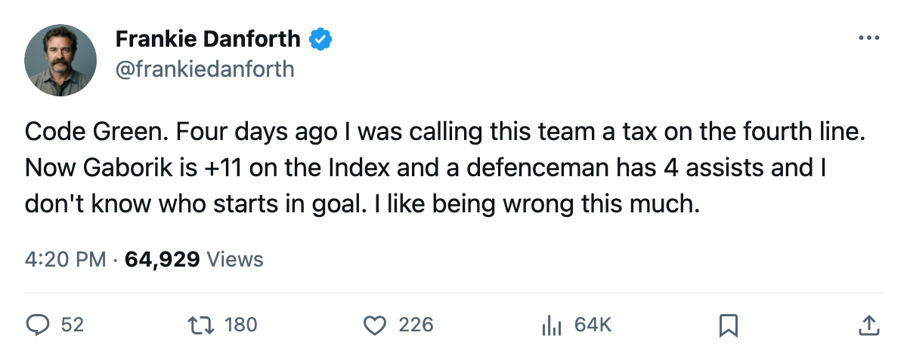
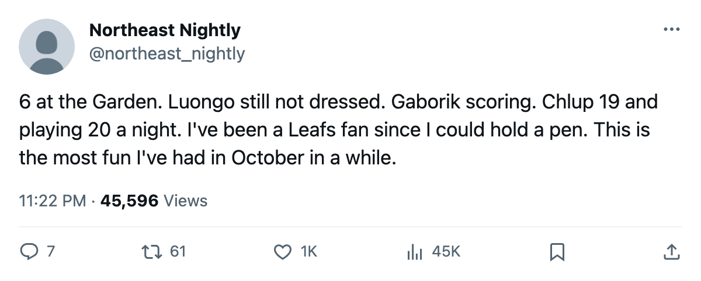

TOR
TORDANFORTH: Code Green, the +11 winger, and the goalie I don't know what to do with
The Leafs lead the Northeast, Gaborik's form is the 2nd best in the league, and I still cannot tell you who starts tomorrow
 Frankie DanforthColumnist · Queen City Telegram
Frankie DanforthColumnist · Queen City Telegram
Code Green

Code Green.
Toronto leads the Northeast at 6 points from 4 games. 15 goals for, 6 against. I sat down to write about the second-centre problem and the fourth line being a tax and I cannot. They're winning with kids and a 36-year-old and a defenceman with 4 assists.
 Marian Gaborik99 is at +11 on the Bureau's Development Index. That's the 2nd highest rise in the league, behind
Marian Gaborik99 is at +11 on the Bureau's Development Index. That's the 2nd highest rise in the league, behind  Florida Panthers's
Florida Panthers's  Vaclav Nedorost84 at +12. Gaborik's overall grade reads 99, the best number on this roster. He scored 1 goal in 3 games at 16.0 minutes after missing the opener. The contract still reads $11.90M for 5 years. I will never make peace with that figure. The player in the sweater right now is worth it, and I'll say so until he stops being worth it.
Vaclav Nedorost84 at +12. Gaborik's overall grade reads 99, the best number on this roster. He scored 1 goal in 3 games at 16.0 minutes after missing the opener. The contract still reads $11.90M for 5 years. I will never make peace with that figure. The player in the sweater right now is worth it, and I'll say so until he stops being worth it.
Five in the top 20 and counting
5 Maple Leafs sit in the Bureau's top 20 Index risers. Gaborik at +11,  Rostislav Klesla87 at +8,
Rostislav Klesla87 at +8,  Stanislav Chistov87 at +8,
Stanislav Chistov87 at +8,  Jamie Lundmark81 at +8,
Jamie Lundmark81 at +8,  Rick Nash85 at +7.
Rick Nash85 at +7.  Chicago Blackhawks has 3. No other club has more than 2. The Index has been the most interesting thing about this team for 4 games, and it has nothing to do with any trade I wanted.
Chicago Blackhawks has 3. No other club has more than 2. The Index has been the most interesting thing about this team for 4 games, and it has nothing to do with any trade I wanted.
Now the goalie.  Roberto Luongo95, 97 on the Book, Conn Smythe and Jennings from last spring, $1.60M with 3 years left, has not dressed in 2 nights. Maxime Ouellet86, 86, has started both and just won 6-2 at the Garden. I do not know who starts against
Roberto Luongo95, 97 on the Book, Conn Smythe and Jennings from last spring, $1.60M with 3 years left, has not dressed in 2 nights. Maxime Ouellet86, 86, has started both and just won 6-2 at the Garden. I do not know who starts against  Phoenix Coyotes tomorrow. Maybe the coach does, maybe not. If Ouellet keeps winning, where does that leave a Conn Smythe winner on a cheap deal? I've been covering this club long enough to know the rotation answer is usually "it's handled" and nobody explains what that means.
Phoenix Coyotes tomorrow. Maybe the coach does, maybe not. If Ouellet keeps winning, where does that leave a Conn Smythe winner on a cheap deal? I've been covering this club long enough to know the rotation answer is usually "it's handled" and nobody explains what that means.
 Bryan McCabe84 still has not dressed. The Norris Trophy winner, $3.00M, 3 years, watching. Rostislav Klesla plays 28.5 minutes,
Bryan McCabe84 still has not dressed. The Norris Trophy winner, $3.00M, 3 years, watching. Rostislav Klesla plays 28.5 minutes,  Barret Jackman86 plays 28.0, and the defence has conceded 6 goals in 4 games. I owed McCabe an apology since before the first game. Consider it paid. I was wrong to want him in this lineup before these six proved they could hold a lead.
Barret Jackman86 plays 28.0, and the defence has conceded 6 goals in 4 games. I owed McCabe an apology since before the first game. Consider it paid. I was wrong to want him in this lineup before these six proved they could hold a lead.
I wanted a second centre behind  Mats Sundin92 since December 2004.
Mats Sundin92 since December 2004.  Brad Richards87 has 3 assists in 4 games. Petr Chlup87 has 3 points at 20.0 minutes. Vaclav Spacek80 has 2 goals in 7.0. I don't know if any of them is the answer. But I don't think the answer walks through a trade door anymore.
Brad Richards87 has 3 assists in 4 games. Petr Chlup87 has 3 points at 20.0 minutes. Vaclav Spacek80 has 2 goals in 7.0. I don't know if any of them is the answer. But I don't think the answer walks through a trade door anymore.
Phoenix Coyotes tomorrow. 0-3-0. 4 goals in 3 games. I'll log it: Toronto scores at least 3.

